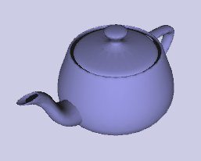

Introduction
SceneJS is an open source Javascript framework from XeoLabs that provides an extensible scene graph framework on top of the powerful new OpenGL-standard Canvas3D element (and soon the WebGL canvas as well) .
SceneJS is designed so that your scene graphs have a clean declarative feel to them. Check out the minimal scene below, which renders the venerable OpenGL teapot shown to the right. If you're familiar with 3D graphics and scene graphs, it should be faurly clear what's going on in there.
To render the teapot, SceneJS will traverse the scene in depth-first order. Each node sets some OpenGL state when pre-visited, then un-sets it again when post-visited. In this graph, a canvas activates a Canvas element, a simpleShader activates some GLSL scripts, and the rest of the nodes set various matrices, vectors and geometry variables within the scripts (except for viewport which calls a fixed OpenGL function).
Note that node declarations generally have the form node({configs}, child,child...).
There's a lot more to SceneJS than this of course - I'll show you animation, instancing, event flow, custom nodes and GLSL shaders etc. in the rest of the documentation (as I write it!).
Our first scene graph: